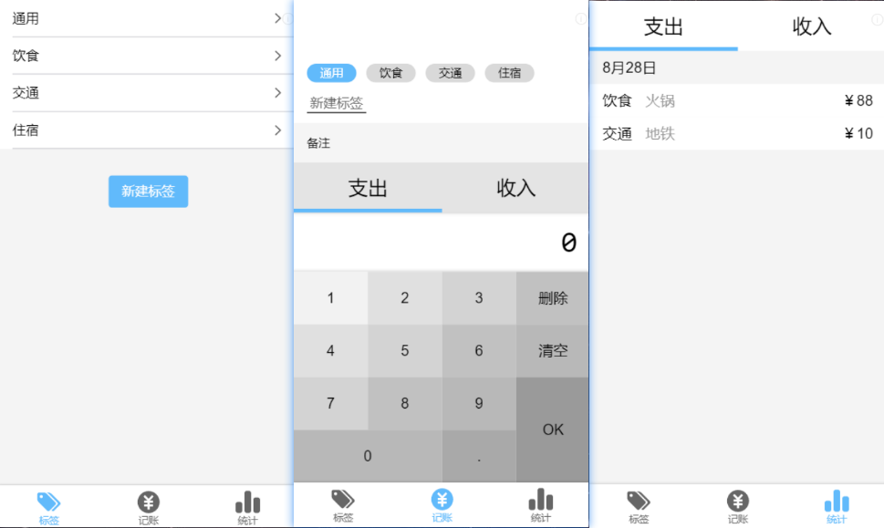
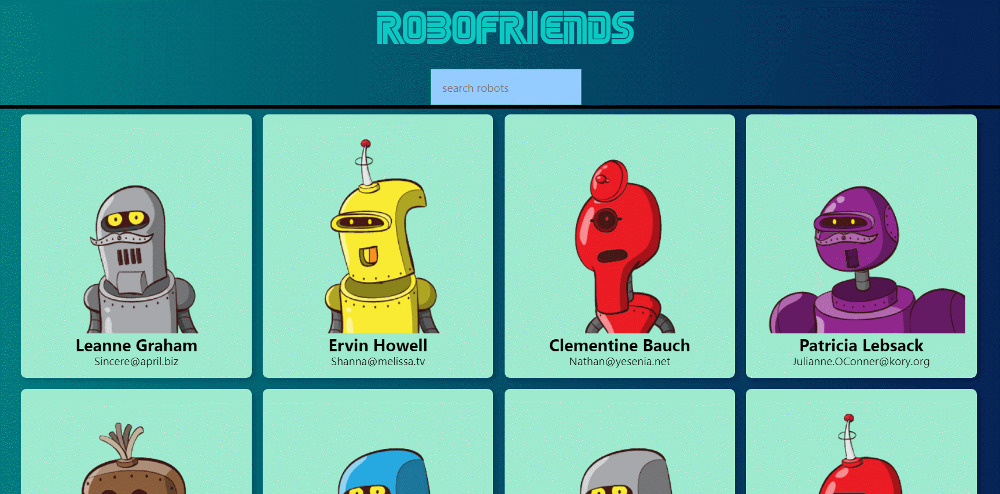
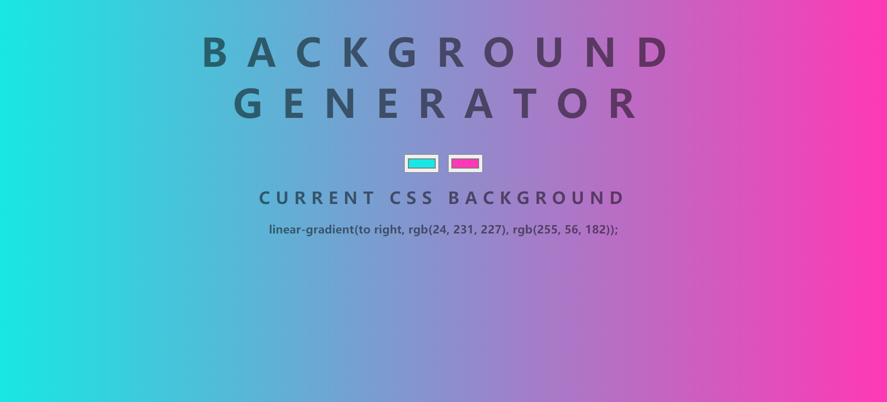

项目经历
人脸识别

- 项目介绍： 这个项目主要实现了注册、登录、识别照片中人脸并标注、记录用户识别次数等功能。 项目设计了良好的目录布局，遵循 React 组件化的思想，并尽量使用函数组件，其由入口文件、容器组件、功能组件构成。前端基于 React 库，采用 create-react-app 脚手架生成项目结构，分析项目状态复杂度后采用了 React 原生的 state、setState 来做状态管理和路由，将部分组件的状态提升至父组件实现不同子组件之间通信。使用 Flex 和 tachyons、react-particles-js 轻量 UI 库快速生成样式，并使用了自己的开源项目线性背景生成。后端基于 NodeJS 与 Express ，使用 bcrypt.js 加密用户密码，使用 PostgreSQL 数据库存储用户信息。人脸识别使用了 Clarifai 服务商提供的 api 接口。项目可线上访问，部署在 heroku 平台上。
- 技术栈：React / NodeJs / Express / PostgreSQL
- 项目源码：github.com/cym2050/faceRecognition
- 浏览链接：cym2050.github.io/faceRecognition/
极简记账
- 项目介绍： 做此项目实现的是自己的记账需求，特点是快速记账、统计、标签管理。 这个项目使用了Typescript语言，实践用React Router做路由实现标签管理、编辑页，记账页，统计页的跳转，使用自定义Hooks做全局状态管理，将标签，记账记录使用localStorage做数据本地持久化。同时使用styled-components库作为CSS-IN-JS的布局样式的方案符合React的组件化思想，使用SCSS作为预处理器有效减少CSS的冗余。同时程序中可以复用的如按钮、输入框等进行组件化以便复用。
- 技术栈：React / TypeScript / React Router / React Hooks
- 项目源码：github.com/cym2050/P-minimalist-money
- 浏览链接：cym2050.github.io/P-minimalist-money/
Robot-Friends
- 项目介绍： 项目从远程API获取一组用户信息，生成不同的好玩的机器人相片，可以搜索用户名获取不同相片， 该项目主要是对React-Redux的实践，用Redux生成store全局管理状态，使用React-Redux提供的connect方法从UI组件生成容器组件，使用Provider方法使得包裹下的组件全部可以访问State而不需要将State作为props一级级的向深层组件传递，并用mapStateToProps将组件的state映射为props，用mapDispatchToProps将对组件的操作映射为Action。应用中间件redux-thunk使得dispatch 可以传递函数类型的Action，用来处理Ajax异步请求获取api的机器人数据.
- 技术栈：React/ Redux / React Redux
- 项目源码：github.com/cym2050/P-react-robofriends
- 浏览链接：cym2050.github.io/P-react-robofriends
开源项目
线性渐变背景生成器
- 项目介绍： 这个实现通过鼠标选取两个颜色，然后生成从左至右、颜色渐变的超级好看的渐变色网页背景，并能输出背景的CSS样式代码。项目主要使用原生DOM操作获取文档节点，获取颜色输入后，更改样式属性，然后生成linear-gradient背景并在网页上输出CSS样式代码供用户使用。
- 项目源码：github.com/cym2050/P-JS-DOM-backgroundgenerator
- 浏览链接：cym2050.github.io/P-JS-DOM-backgroundgenerator
速写画板
- 项目介绍： 画板适配了电脑端与移动端，在电脑端使用鼠标进行图像绘制，移动端使用触摸也可以绘制图像。实现了画笔、橡皮擦、颜色选取、画笔粗细、清屏、作为图片下载等功能。主要实践使用canvas api。
- 项目源码：github.com/cym2050/drawing-board
- 浏览链接：http://cym2050.gitee.io/sketch
关于我
熟悉 HTML5 常用标签，熟悉 标签语义化 并使用在具体项目中。
熟悉 CSS3 包括 盒模型 / Flex / Grid布局 / CSS3动画 / Canvas 等，熟悉 styled-components，了解 Sass ，Less 预处理器。
熟悉使用 Flex / rem / Less / 媒体查询 制作移动端适配页面。
熟悉原生 JavaScript 编程包括 闭包 / 原型链 / this 指针等， 熟悉 ES6新特性 包括 let / promise / class / 解构赋值等。掌握并在项目中使用 TypeScript 编程。
熟练掌握 React全家桶 的使用，包括 create-react-app / Redux / React Redux / ReactRouter / ReactHooks 等。
了解 Vue.js / Vuex / Vue Router。
了解 nodeJS / Express 等后端开发，并实际使用 Express 开发过后台。
了解 webpack 等前端前端工程化工具，并实际使用 webpack 打包过项目。